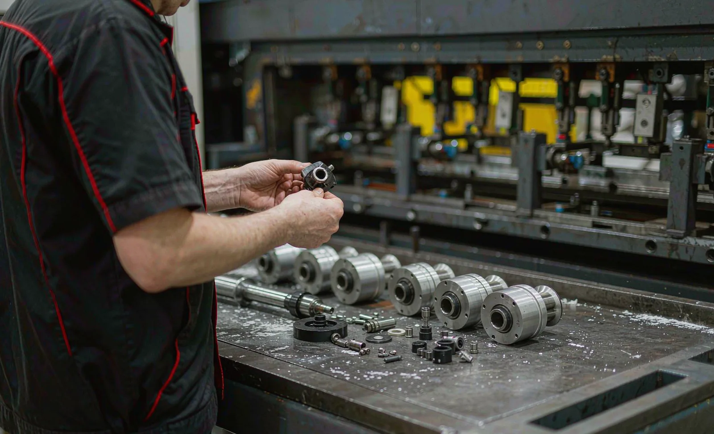
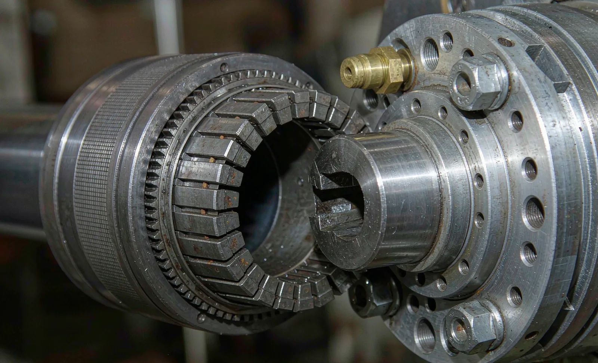

Published September 17, 2026 | By HDPTH Technical Editorial Team

Between the drive motor and the finished roll sits a component class that rarely appears on the buyer’s agenda: core chucks, expanding shafts and their footstock hardware. These parts carry the entire rewind torque, define roll concentricity and set the pace of every roll change. A worn bladder or slipping safety chuck does not stop the machine with an alarm — it degrades quietly into loose first winds, roll runout, core crush and telescoping. Specifying maintenance at purchase avoids paying for that degradation twice: in quality, then in downtime.
Know your hardware: shafts, chucks and shaftless alternatives
Three hardware families do the gripping. Air expanding shafts run the roll’s full width and grip the core from inside — an inflated bladder pushes lugs, buttons or strips outward against the core wall. Core chucks (safety chucks) sit in the machine stands and clamp the exposed end of that shaft through its torque bar, allowing fast insertion and release without deflating. Shaftless stands skip the shaft and grip the core ends directly — a configuration compared in our guides on shafted vs shaftless unwind and air shaft selection. Each family has its own wear points — the maintenance plan must follow the hardware.
Selecting the expansion type: core damage vs torque capacity
Expansion elements trade grip against core protection. Continuous strip or long-lug shafts distribute contact and suit thin-walled cores and light-tension webs such as spunlace and tissue. Round button elements concentrate force and transmit higher torque on sturdier cores. The input that matters is the pairing of your weakest core with your highest torque case: require suppliers to state, in writing, the recommended expansion pressure and torque rating for that pairing, and to size the shaft safety factor against your maximum roll weight and speed.
| Component | Key wear items | Inspection focus |
|---|---|---|
| Air expanding shaft | Bladder, lugs/buttons, seals, rotary fitting | Pressure at zero load vs spec, lug protrusion, leakage, straightness |
| Safety (core) chuck | Cam blocks, bearing, locking mechanism | Backlash at the torque bar, clamping wear, lubrication state |
| Footstock and stands | Bearings, seals, slide surfaces | Runout after clamping, slide freedom, noise under torque |
A maintenance program buyers can contract
Chuck maintenance succeeds when written down and resourced. A practical program contains:
- Daily (operator): check for air leakage at fittings, damaged elements and cores that bind; report shafts needing above-spec pressure.
- Weekly: verify expansion pressure with a calibrated gauge; clean the shaft surface of dust and residue that abrade bladders and lugs.
- Per planned stop: measure lug protrusion at zero pressure, inspect bladders, grease footstock bearings, check safety chuck cam blocks for backlash.
- Pull criteria: any shaft that slips under normal torque, holds marginally at spec pressure, or leaves visible roll runout goes to the overhaul bench — not back into service.
- Spare parts: bladders, seal kits, lugs, rotary fittings and footstock parts held on site with part numbers; overhauled at the bench per the supplier’s manual.
The last item belongs in the purchase contract: our guide on warranty and spare parts explains how to make the supplier commit to part numbers, lead times and pricing before signing.
What worn hardware costs you
The economics are straightforward: a tired bladder needs higher pressure, which accelerates fatigue and crushes light cores; crushed cores run eccentric, producing tension oscillation, telescoping and web breaks. Stiff or damaged safety chucks slow roll changeover, and on turret machines every stop second counts toward the OEE budget in our OEE and downtime data guide. Chuck maintenance is among the highest-return hours in the plant because each intervention prevents a chain of downstream symptoms.
Safe work practices around chucks and shafts
Shafts are long, heavy and handled constantly — a concentration point for injury risk. Lockout and stored-energy control apply whenever a shaft or chuck is serviced: an inflated bladder stores energy, a raised footstock stores gravity. Verify shaft supports for handling, footstock locking interlocked with drive enable, and maintenance procedures that follow recognized hazardous-energy control practice (see sources below).

Need chuck and shaft specifications reviewed?
Send HDPTH your core sizes, roll weights, tensions and changeover pattern. We will propose shaft and chuck hardware with stated torque ratings, expansion pressures and a spares list, included in the offer with the machine.
Submit Your Project InquiryQuestions to put to every vendor
- Which expansion type and pressure do you recommend for my weakest core at maximum torque?
- Which components are wear parts, what intervals under my duty cycle, and are overhaul kits available?
- Are bladders, seals, lugs and footstock parts on the recommended spares list with part numbers?
- What roll runout do you commit to at the core after clamping, and how is it measured at FAT?
- Do handover documents include the chuck and shaft maintenance procedures and lubrication schedule?
Building your maintenance program?
Read our guides on air shaft selection and operator training or send your questions directly.
Contact HDPTHFrequently asked questions
What is the difference between an air expanding shaft and a core chuck?
An air expanding shaft runs the full roll width: an inflated bladder pushes lug, button or strip elements outward along its length to grip the core from inside. A core chuck (sometimes called a safety chuck or chock) sits in the machine footstock and grips the exposed end of a shaft — typically its torque bar or key flats — so the machine can clamp and release a shafted roll quickly without deflating anything. Most converting lines use both: expanding shafts inside the rolls, core chucks in the stands to hold and drive those shafts. Shaftless unwind stands instead grip the core ends directly with chuck elements.
How often should chucks and shafts be maintained?
Build the program around cycles, not the calendar. Inspect daily for air leakage at fittings, damaged lugs and cores stuck on the shaft. Weekly, check air pressure at the shaft against the expansion specification and clean the shaft surface. Monthly or per planned stop, measure lug protrusion at zero pressure, check bladder condition, grease bearings in the footstock and inspect safety chuck cam blocks for wear. Any shaft that needs above-spec pressure to hold torque, or that leaves a loose first wind, should be pulled for overhaul before it slips in production.
What are the most common failure modes to design against?
The dominant ones: bladder puncture or fatigue from overpressure and sharp core ends; worn lugs and buttons that no longer reach the core wall; leaking rotary joints and fittings; bent shafts from dropping or overhanging loads; and worn safety-chuck cam blocks that allow backlash and roll runout. Most are wear items, not defects — so buyers should ask which components the supplier treats as spare parts, their replacement intervals under the buyer’s duty cycle, and whether overhaul kits with seals and bladders are available off the shelf.
How do I choose between lug, button and strip-type expansion?
Match the contact pattern to the core and the tension. Long lug (slip-on style with continuous strips) gives gentle, distributed grip for thin-walled cores and light tension webs. Round button elements concentrate grip at points and suit heavier torque on sturdier cores. Lead-lug and high-torque variants exist for difficult starts. The trade-off is core damage risk versus torque capacity: aggressive elements transmit more torque but can crush light cores. Specify by weakest core, highest torque case — and require the supplier to state the recommended expansion pressure and torque rating for that pairing.
What should buyers check at FAT regarding chucks and shafts?
Run the real duty cycle: mount and demount shafts and cores repeatedly to verify handling ergonomics and clamping time. Measure the air pressure required to hold maximum rewind torque on your lightest core and confirm it stays within the shaft’s rating. Check roll runout at the core after clamping — visible runout at the rewind becomes telescoping and roll hardness variation downstream. Confirm spare bladders, seals, lugs and footstock parts are on the recommended spares list with part numbers, and that the maintenance procedures appear in the handover documentation.